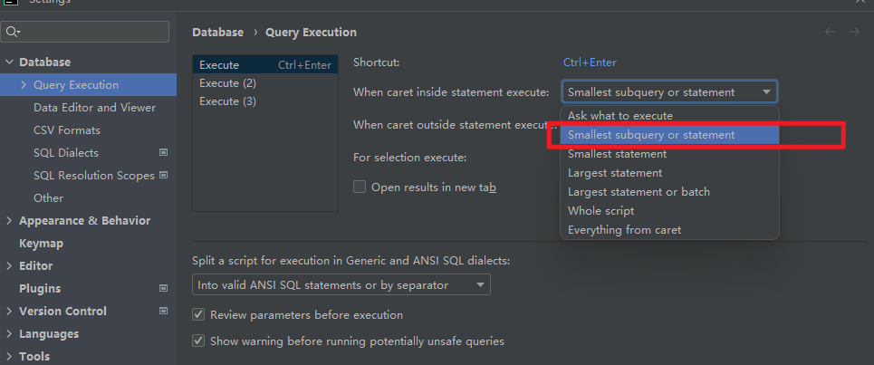
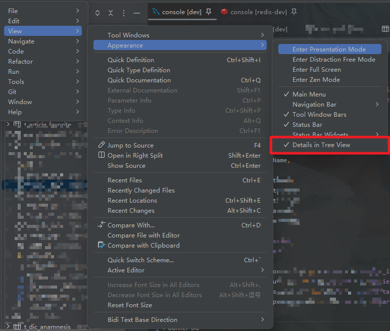
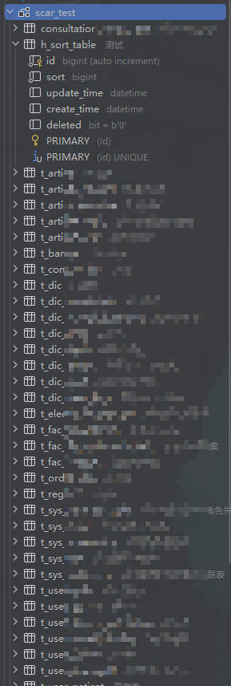
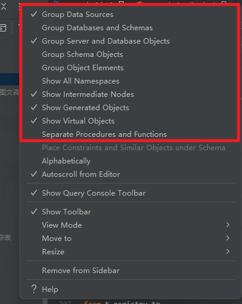
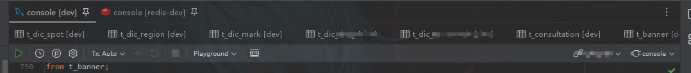
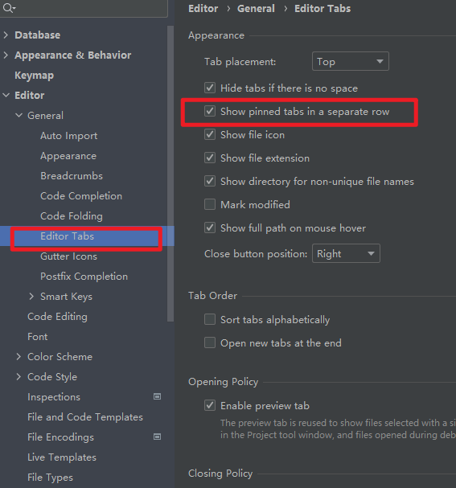
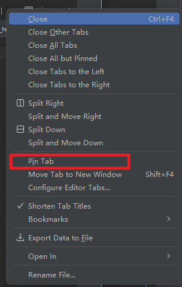
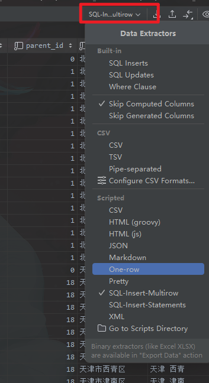
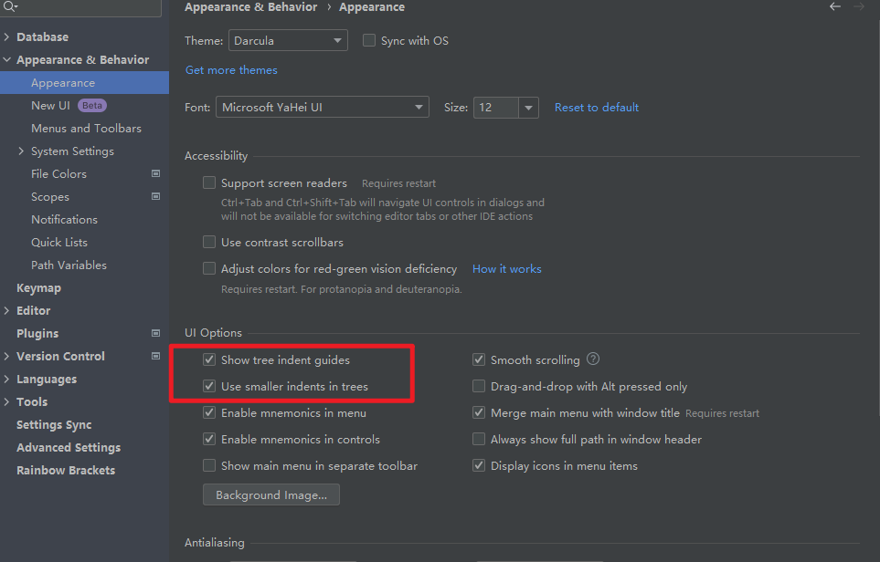

DaraGrip为Intellij下的数据库软件, 个人比较喜欢使用
执行sql快捷键
当在console中写完sql之后, 使用快捷键ctrl+enter来执行, 默认是需要选择执行哪个sql, 可以设置为执行光标所在的最小执行单位.


效果为光标放在哪里, 就会执行哪些sql, 而不用自己再手动去选择整条sql.
表字段直接展示注释
效果


设置方式: view>appearance>details in tree view


数据库展示精简化
datagrip的这个列表默认是需要点击很多层才能看到具体的表和字段, 设置优化后效果


设置


查询console标签固定
有时候我们查询数据库的时候, 可能会点开很多张表去看一下数据, 多了之后我们写sql的console就不见了, 但是它又是非常常用的, 所以可以固定一下, 在最上层显示
效果


设置有两步
第一步, 设置单独展示pinned的行


第二步, 在需要pin的标签上右键, pin这个标签


数据的复制格式
在datagrip中, 数据的复制可以用很多种格式, 极大方便我们对数据的组装, 例如
SQL Insterts: 直接复制成insert语句
Where Clause: 直接将选中的数据复制成where语句
sql-insert-mutirow:
|
|
可以自己选中操作尝试一下不同的格式, 也可以自定义,一般用不到
设置


目录缩进/展示树形线
默认的目录缩进比较大, 可以缩小一点, 更简洁明了, 至于效果上面的图应该可以看出来了.
设置


复制表不方便
这个东西最大的毛病就是复制表很不方便, 不像navcat直接拖拽就行了